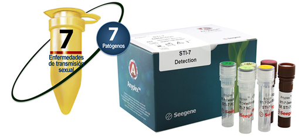

ANYPLEX™ II STI-7 DETECTION

INDICACIÓN DE USO:
AnyplexTM II STI-7 Detection puede detectar, diferenciar y proporcionar información cuantitativa, a partir de una sola muestra, sobre 7 patógenos causantes de infecciones de transmisión sexual (ETS) mediante PCR en tiempo real.
Analitos:
• Chlamydia trachomatis (CT).
• Neisseria gonorrhoeae (NG).
• Trichomonas vaginalis (TV).
• Mycoplasma hominis (MH).
• Mycoplasma genitalium (MG).
• Ureaplasma urealyticum (UU).
• Ureaplasma parvum (UP).
• Control interno.
Muestras:
• Hisopado uretral.
• Hisopado vaginal.
• Hisopado cervical.
• Orina.
• Muestras de citología en base líquida.
Equipos compatibles:
• Extracción automatizada y montaje de PCR.
- Nimbus IVD (Hamilton).
- STARlet (Hamilton).
• PCR en tiempo real.
- CFX96™ (Bio-Rad).
CARACTERÍSTICAS:
• Detección y diferenciación de los 7 principales patógenos causantes de ETS en una sola reacción.
• PCR multiplex en tiempo real con alta sensibilidad y especificidad mediante la utilización de las tecnologías DPOTM y TOCETM.
• Análisis cuantitativo por CMTA cíclico.
• Facilidad de uso de los sistemas automatizados para manejo de muestras y pruebas.
• Utilización del sistema UDG para prevenir la contaminación por arrastre.
• Control interno (CI) para la validez del ensayo.
• Eficaz interpretación de datos por Seegene Viewer
Visualizador Seegene:
• Análisis e interpretación de resultados rápidos y sencillos.
• Interfase especializada para pruebas multiplex.
• Enlazable a LIS.
• Entrada de datos del paciente a través del sistema de código de barras.
• Impresión en varios formatos.
• Resultados descargables en archivo CVS.
• Visualización conveniente para el análisis cuantitativo de resultados.
INFORMACIÓN DE PEDIDO:
|
Nombre del producto |
Catálogo No. |
Presentación |
|
Anyplex™ II STI-7 Detection |
SD7700Y |
50 rxns |
|
Anyplex™ II STI-7 Detection |
SD7700X |
100 rxns |
PUBLICIDAD DIRIGIDA A
PROFESIONALES DE LA SALUD
Registro Sanitario No.: 1785R2016 SSA
Aviso de Publicidad No.: 173300202C3475
DATOS COMPLEMENTARIOS: Para mayor informes comunicarse a:
amplibio-seegene diagnostics, S.A.p.i. DE C.V.
Teléfonos: (55) 5035-9808, 5377-1609,
5377-1615, 5377-1612
www.asdx.mx